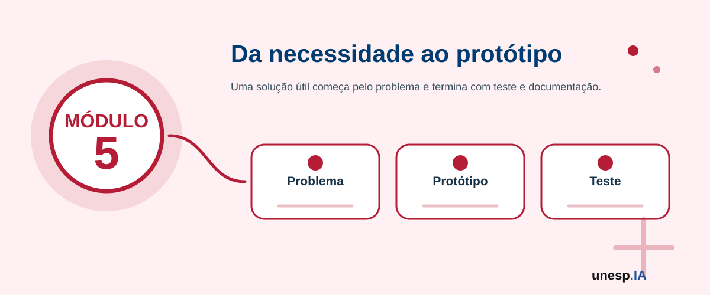

Desenvolvimento de Soluções Baseadas em Inteligência Artificial
Ferramentas relacionadas neste módulo

Apresentação
Nos módulos anteriores, o participante conheceu os fundamentos da Inteligência Artificial, utilizou ferramentas de IA, produziu conteúdos digitais e compreendeu, de forma introdutória, como modelos aprendem a partir de dados. O Módulo 5 avança para a criação de soluções simples baseadas em IA, aproximando o participante do desenvolvimento de protótipos, experimentos e aplicações práticas.
A proposta deste módulo não é formar programadores avançados ou cientistas de dados, mas introduzir o processo de desenvolvimento de soluções com IA de maneira acessível, orientada por problemas reais e apoiada por ferramentas simples. O participante será conduzido desde a identificação de um problema até a construção de um protótipo funcional ou demonstrativo.
O foco será aprender fazendo: definir um problema, pensar nos dados necessários, escolher uma abordagem, utilizar ferramentas de IA, construir uma solução simples, testar resultados, avaliar limitações e apresentar o protótipo de forma clara.
1. Organização do Módulo
Carga horária total
16 horas.
Público recomendado
Estudantes, professores, trabalhadores, empreendedores, servidores públicos, jovens, adultos e participantes interessados em desenvolver soluções simples com IA. Recomenda-se que o participante tenha realizado os Módulos 1, 2 e 4, ou possua noções básicas sobre IA, ferramentas digitais e funcionamento de modelos.
Objetivo geral
Capacitar os participantes para planejar, prototipar, testar e apresentar soluções simples baseadas em Inteligência Artificial, utilizando ferramentas acessíveis, dados simples, programação introdutória ou plataformas no-code/low-code, com atenção à ética, segurança, privacidade, qualidade dos dados e utilidade prática.
Competências desenvolvidas
Ao final do módulo, espera-se que o participante seja capaz de:
- identificar problemas que podem ser apoiados por IA;
- transformar uma necessidade real em proposta de solução;
- definir objetivo, público-alvo, dados necessários e resultado esperado;
- compreender o ciclo básico de desenvolvimento de uma solução com IA;
- organizar dados simples para uso em protótipos;
- utilizar ferramentas no-code, low-code ou ambientes introdutórios como Google Colab;
- compreender noções básicas de Python aplicado à IA, quando pertinente;
- construir protótipos simples com IA;
- testar e avaliar resultados iniciais;
- reconhecer limitações, riscos, vieses e cuidados éticos;
- documentar uma solução de IA;
- apresentar um protótipo funcional ou demonstrativo.
2. Estrutura das Unidades
| Unidade | Tema | Carga horária |
|---|---|---|
| Unidade 5.1 | Da ideia ao problema: identificando oportunidades para IA | 2h |
| Unidade 5.2 | Dados para soluções com IA | 2h |
| Unidade 5.3 | Prototipagem no-code e low-code com IA | 3h |
| Unidade 5.4 | Introdução prática ao Python e Google Colab | 3h |
| Unidade 5.5 | Construção de um modelo ou solução simples | 3h |
| Unidade 5.6 | Avaliação, documentação e apresentação do protótipo | 3h |
| Total | 16h |
A sequência pedagógica segue a lógica:
problema → dados → protótipo → programação introdutória → solução simples → avaliação e apresentação
Unidade 5.1 – Da ideia ao problema: identificando oportunidades para IA
Carga horária
2 horas
Objetivo da unidade
Capacitar os participantes para identificar problemas reais que podem ser apoiados por IA, definindo objetivo, público-alvo, contexto, necessidade e resultado esperado.
Situação de abertura
Uma escola quer identificar estudantes que precisam de apoio.
Uma pequena loja quer melhorar o atendimento aos clientes.
Uma prefeitura quer organizar solicitações recebidas pela ouvidoria.
Um professor quer criar atividades personalizadas.
Um cidadão quer organizar documentos e informações.
Um empreendedor quer prever quais produtos vendem mais.
Todas essas situações podem se beneficiar da IA, mas antes de pensar na ferramenta é necessário compreender o problema.
Conceitos principais
Uma solução com IA começa com uma necessidade real. A IA não deve ser usada apenas porque é moderna ou atrativa. Ela deve ser utilizada quando ajuda a resolver um problema, organizar informações, apoiar decisões, automatizar tarefas ou melhorar um processo.
Antes de desenvolver uma solução, é necessário responder:
- Qual é o problema?
- Quem é afetado por ele?
- Por que ele é importante?
- Que dados estão disponíveis?
- Que resultado esperamos?
- A IA é realmente necessária?
- Há riscos ou cuidados éticos?
- Quem será responsável pela decisão final?
Diferença entre ideia, problema e solução
Ideia
É uma possibilidade inicial.
Exemplo: “usar IA em uma escola”.
Problema
É uma necessidade concreta a ser resolvida.
Exemplo: “identificar estudantes com dificuldade para que recebam apoio antes da reprovação”.
Solução
É a proposta prática para enfrentar o problema.
Exemplo: “criar um painel simples que organize frequência, notas e atividades para indicar estudantes que precisam de acompanhamento”.
Quando usar IA?
A IA pode ser útil quando há necessidade de:
- organizar muitos dados;
- identificar padrões;
- classificar informações;
- prever tendências;
- recomendar ações;
- gerar conteúdos;
- automatizar tarefas repetitivas;
- apoiar atendimento;
- resumir documentos;
- criar protótipos inteligentes.
Quando não usar IA?
Nem todo problema precisa de IA.
A IA pode não ser adequada quando:
- não há dados suficientes;
- o problema pode ser resolvido com uma regra simples;
- o risco de erro é muito alto;
- há dados sensíveis sem proteção adequada;
- não há supervisão humana;
- a solução pode prejudicar pessoas;
- o objetivo não está claro.
Exemplos de problemas possíveis
Educação
- identificar dúvidas frequentes de estudantes;
- criar exercícios personalizados;
- organizar materiais de estudo;
- acompanhar frequência e desempenho.
Negócios
- classificar mensagens de clientes;
- gerar descrições de produtos;
- prever vendas simples;
- organizar feedbacks.
Gestão pública
- agrupar solicitações por tema;
- resumir documentos;
- organizar demandas de cidadãos;
- apoiar produção de comunicados.
Saúde e bem-estar
- organizar rotina de autocuidado;
- criar lembretes;
- classificar informações gerais;
- apoiar orientação inicial, sem substituir profissional.
Cidadania digital
- organizar dúvidas para atendimento;
- resumir documentos públicos;
- identificar sinais de golpes;
- criar guias simples.
A IA deve apoiar decisões, não substituir responsabilidade humana. Em áreas sensíveis como saúde, justiça, segurança, educação, crédito e políticas públicas, decisões automatizadas exigem cuidado, transparência e supervisão.
Escolha uma situação real e responda:
- Qual é o problema?
- Quem é afetado?
- Que dados poderiam ajudar?
- Que resultado seria útil?
- A IA é necessária?
- Qual cuidado ético deve ser considerado?
Atividade guiada – Canvas do problema de IA
Objetivo
Transformar uma ideia inicial em um problema claro para uma solução com IA.
Passo a passo
- Escolher uma área de interesse:
- educação;
- negócios;
- gestão pública;
- saúde e bem-estar;
- vida cotidiana;
- comunicação;
- cidadania digital.
- Descrever a ideia inicial.
- Transformar a ideia em problema.
- Identificar o público beneficiado.
- Listar dados que poderiam ser usados.
- Definir o resultado esperado.
- Identificar riscos e cuidados.
- Registrar tudo em um quadro ou formulário.
Modelo de canvas
Título da ideia:
Problema identificado:
Público-alvo:
Dados necessários:
Tipo de apoio da IA:
Resultado esperado:
Riscos e cuidados:
Responsável pela decisão final:
Canvas do problema de IA.
A pergunta mais importante é “qual ferramenta de IA usar?” ou “qual problema realmente precisamos resolver?”
Unidade 5.2 – Dados para soluções com IA
Carga horária
2 horas
Objetivo da unidade
Capacitar os participantes para compreender, organizar e preparar dados simples que possam ser utilizados em protótipos ou soluções introdutórias com IA.
Situação de abertura
Carlos quer prever quais produtos vendem mais em sua loja, mas seus registros estão espalhados em cadernos, mensagens e planilhas incompletas.
Uma professora quer acompanhar dificuldades dos alunos, mas as informações estão em diferentes documentos.
Uma prefeitura quer organizar solicitações de cidadãos, mas os textos estão escritos de formas muito diferentes.
Antes de usar IA, é preciso organizar os dados.
Conceitos principais
Dados são a base de muitas soluções com IA. Uma solução só será útil se os dados forem relevantes, organizados, atualizados e adequados ao problema.
Nem sempre é necessário ter uma base grande. Para um protótipo, é possível trabalhar com dados pequenos e exemplos simples, desde que sejam bem compreendidos.
Tipos de dados usados em soluções com IA
Dados numéricos
Exemplos:
- idade;
- valor de venda;
- quantidade;
- nota;
- frequência;
- tempo;
- número de atendimentos.
Dados categóricos
Exemplos:
- tipo de produto;
- bairro;
- turma;
- status;
- categoria de solicitação;
- forma de pagamento.
Dados textuais
Exemplos:
- comentários;
- mensagens;
- reclamações;
- descrições;
- respostas abertas;
- documentos.
Dados visuais
Exemplos:
- imagens;
- fotos;
- capturas de tela;
- desenhos;
- produtos;
- objetos.
Organização dos dados
Uma forma simples de organizar dados é usar uma tabela.
Exemplo de tabela para solicitações de cidadãos:
| Data | Bairro | Texto da solicitação | Categoria |
|---|---|---|---|
| 10/03 | Centro | Lâmpada queimada na rua | Iluminação |
| 11/03 | Vila Nova | Buraco na avenida | Infraestrutura |
| 12/03 | Jardim Sul | Falta de médico no posto | Saúde |
Cuidados com dados pessoais
Antes de usar dados em uma solução com IA, verifique se existem:
- nomes;
- CPFs;
- endereços;
- telefones;
- e-mails;
- informações de saúde;
- dados bancários;
- dados de crianças ou adolescentes;
- informações sensíveis.
Sempre que possível, use dados fictícios, anonimizados ou exemplos simulados em atividades didáticas.
Dados fictícios e dados reais
Dados fictícios
São dados inventados para estudo ou teste.
Exemplo:
Cliente A, Produto X, Valor R$ 50,00.
Dados reais
São dados verdadeiros de pessoas, empresas ou instituições.
Exigem cuidado, autorização, proteção e finalidade clara.
Preparação dos dados
Preparar dados pode envolver:
- remover duplicidades;
- corrigir erros;
- preencher dados faltantes;
- padronizar categorias;
- remover informações sensíveis;
- organizar colunas;
- transformar texto em categorias;
- separar exemplos para teste.
Qualidade dos dados
Dados bons devem ser:
- relevantes;
- corretos;
- atualizados;
- organizados;
- compreensíveis;
- representativos;
- seguros.
Nunca copie bases com dados pessoais ou sensíveis para ferramentas de IA sem autorização. Em atividades do curso, prefira bases fictícias, públicas ou anonimizadas.
Observe uma pequena tabela e responda:
- Quais colunas existem?
- Há dados pessoais?
- Há dados faltantes?
- Há categorias inconsistentes?
- O que precisa ser corrigido?
- A tabela poderia ser usada em um protótipo?
Atividade guiada – Preparando dados para um protótipo
Objetivo
Organizar uma pequena base de dados para uso em uma solução simples com IA.
Passo a passo
- Escolher um problema definido na Unidade 5.1.
- Criar ou receber uma pequena base fictícia.
- Identificar as colunas.
- Verificar dados faltantes ou incorretos.
- Padronizar categorias.
- Remover ou evitar dados pessoais.
- Definir qual coluna pode ser a resposta esperada, quando houver.
- Salvar a base organizada.
Produto da unidade
Base simples organizada para protótipo.
É melhor ter muitos dados desorganizados ou poucos dados bem compreendidos e bem organizados?
Unidade 5.3 – Prototipagem no-code e low-code com IA
Carga horária
3 horas
Objetivo da unidade
Apresentar formas simples de criar protótipos com IA utilizando ferramentas no-code e low-code, sem exigir programação avançada.
Situação de abertura
Dona Maria quer criar um guia simples para identificar golpes.
Carlos quer criar um formulário para receber pedidos de clientes.
Uma professora quer criar uma atividade interativa.
Uma equipe municipal quer organizar solicitações por tema.
Um estudante quer criar um classificador simples de imagens.
Nem sempre é necessário começar programando. Muitas ideias podem ser testadas com ferramentas simples.
Conceitos principais
Protótipo
Protótipo é uma primeira versão de uma solução. Ele não precisa estar perfeito. Serve para testar uma ideia, mostrar como funcionaria e receber melhorias.
No-code
Ferramentas no-code permitem criar soluções sem escrever código.
Exemplos:
- Google Forms;
- Google Sheets;
- Canva;
- Teachable Machine;
- plataformas de chatbot (assistente conversacional);
- construtores de sites simples.
Low-code
Ferramentas low-code exigem pouco código ou configurações simples.
Exemplos:
- Make;
- Zapier;
- Power Automate;
- AppSheet;
- Power Apps.
Tipos de protótipos possíveis
Protótipo de chatbot
Um assistente simples que responde perguntas frequentes.
Protótipo de classificador
Um sistema que classifica imagens, textos ou solicitações.
Protótipo de painel
Uma visualização simples de dados em tabela ou gráfico.
Protótipo de formulário inteligente
Um formulário que organiza respostas e gera encaminhamentos.
Protótipo de guia interativo
Um material que ajuda o usuário a tomar decisões simples.
Exemplo 1 – Classificador com Teachable Machine
Problema: identificar objetos simples.
Classes:
- caneta;
- celular;
- garrafa.
O participante coleta imagens, treina o modelo e testa se ele consegue reconhecer novos exemplos.
Exemplo 2 – Organização de solicitações com Google Sheets
Problema: organizar pedidos recebidos.
Colunas:
- data;
- bairro;
- descrição;
- categoria;
- prioridade.
A IA pode ajudar a sugerir categorias ou resumir descrições.
Exemplo 3 – Guia de atendimento com IA
Problema: ajudar cidadãos a organizar dúvidas antes de procurar um serviço.
A solução pode conter:
- perguntas frequentes;
- documentos necessários;
- cuidados;
- fontes oficiais.
Um protótipo bom não precisa ser sofisticado. Ele precisa mostrar claramente:
- qual problema resolve;
- quem será beneficiado;
- como funciona;
- quais dados usa;
- quais limites possui;
- que cuidado exige.
Protótipo não é produto final. Ele pode conter erros, limitações e funcionalidades incompletas. Deve ser apresentado como demonstração, não como solução definitiva.
Escolha uma ideia de solução e responda:
- Essa ideia pode virar um protótipo?
- O protótipo seria chatbot, formulário, classificador, painel ou guia?
- Qual ferramenta simples poderia ser usada?
- Que resultado o usuário veria?
- Que limitação o protótipo teria?
Atividade guiada – Criando um protótipo no-code
Objetivo
Criar uma primeira versão simples de solução com IA ou apoio de IA.
Passo a passo
- Retomar o problema definido no canvas.
- Escolher o tipo de protótipo.
- Escolher a ferramenta.
- Criar a estrutura inicial.
- Inserir dados fictícios ou exemplos.
- Usar IA para gerar textos, categorias, instruções ou respostas.
- Testar com colegas.
- Registrar dificuldades e melhorias.
Exemplos de produtos
- formulário inteligente;
- guia de perguntas e respostas;
- classificador simples;
- painel em planilha;
- roteiro de chatbot;
- protótipo visual de aplicativo.
Ferramentas
Teachable Machine, Google Forms, Google Sheets, Canva, Google Slides, ChatGPT, Gemini, Copilot, AppSheet, Make ou Zapier, conforme disponibilidade.
Protótipo no-code ou low-code inicial.
O que é mais importante em um protótipo inicial: parecer pronto ou permitir aprender rapidamente com testes?
Unidade 5.4 – Introdução prática ao Python e Google Colab
Carga horária
3 horas
Objetivo da unidade
Apresentar noções introdutórias de Python e Google Colab para manipulação simples de dados e construção de pequenos experimentos com IA.
Situação de abertura
Até aqui, muitos protótipos puderam ser criados com ferramentas prontas. Mas em alguns casos é necessário manipular dados, criar gráficos, testar modelos ou personalizar soluções.
Para isso, a programação pode ajudar. O Python é uma das linguagens mais utilizadas em Inteligência Artificial, Ciência de Dados e automação.
Conceitos principais
Python
Python é uma linguagem de programação muito usada por ser simples, legível e poderosa.
É utilizada em:
- análise de dados;
- automação;
- IA;
- aprendizado de máquina;
- visualização de informações;
- desenvolvimento de protótipos.
Google Colab
Google Colab é uma ferramenta online que permite escrever e executar códigos Python no navegador, sem instalar programas no computador.
Ele permite combinar:
- textos explicativos;
- códigos;
- tabelas;
- gráficos;
- resultados.
Notebook
Um notebook é um documento interativo com células de texto e células de código.
Primeiros conceitos de Python
Variáveis
Guardam valores.
Exemplo conceitual:
nome = "Maria"
idade = 65
Listas
Guardam vários valores.
Exemplo:
produtos = ["arroz", "feijão", "leite"]
Tabelas
Podem representar dados organizados em linhas e colunas.
Bibliotecas
São conjuntos de recursos prontos.
Exemplos:
Manipulação simples de dados
Com Python, é possível:
- abrir uma tabela;
- visualizar linhas;
- contar registros;
- calcular médias;
- criar gráficos;
- separar dados;
- treinar modelos simples.
Exemplo de problema simples
Prever se uma pessoa prefere produto A ou B com base em respostas simuladas.
Ou classificar solicitações simples por categoria.
Ou visualizar vendas por mês.
Neste módulo, a programação será introdutória. O objetivo é compreender a lógica, não dominar todos os comandos.
Erros de código são normais e fazem parte do aprendizado.
Observe um pequeno trecho de código apresentado pelo instrutor e identifique:
- Onde estão os dados?
- O que o código está tentando fazer?
- Qual resultado aparece?
- Há alguma parte que parece repetitiva?
- O que poderia ser alterado?
Atividade guiada – Primeiro notebook com dados
Objetivo
Criar ou executar um notebook simples no Google Colab.
Passo a passo
- Abrir o Google Colab.
- Criar um novo notebook.
- Escrever um título em texto.
- Criar uma pequena tabela de dados ou carregar exemplo.
- Visualizar os dados.
- Gerar uma estatística simples.
- Criar um gráfico simples.
- Escrever uma interpretação do resultado.
- Salvar o notebook.
Exemplo de estrutura do notebook
Título:
Objetivo:
Dados utilizados:
Código executado:
Resultado observado:
Interpretação:
Limitações:
Ferramentas
Google Colab, Python, Pandas, Matplotlib, Google Sheets ou base fictícia fornecida.
Notebook introdutório com leitura, visualização ou análise simples de dados.
Programar é apenas escrever código ou é uma forma de organizar o pensamento para resolver problemas?
Unidade 5.5 – Construção de um modelo ou solução simples
Carga horária
3 horas
Objetivo da unidade
Construir uma solução simples baseada em IA, utilizando ferramenta no-code, low-code ou notebook introdutório, conforme o perfil da turma.
Situação de abertura
Agora que o problema foi definido, os dados foram organizados, o protótipo foi pensado e as ferramentas foram exploradas, chegou o momento de construir uma solução simples.
A solução pode ser um modelo, um classificador, um painel, um guia inteligente, um chatbot inicial ou um notebook com análise de dados.
Conceitos principais
Uma solução simples com IA deve conter:
- problema claro;
- público-alvo definido;
- dados ou exemplos;
- funcionamento básico;
- resultado apresentado ao usuário;
- avaliação inicial;
- cuidados e limites.
Possíveis caminhos de construção
Caminho 1 – Classificador simples
Ferramenta: Teachable Machine ou notebook.
Exemplo:
- classificar objetos;
- classificar imagens;
- classificar intenções simples;
- classificar solicitações.
Caminho 2 – Análise de dados simples
Ferramenta: Google Sheets ou Google Colab.
Exemplo:
- analisar vendas;
- contar categorias;
- gerar gráficos;
- identificar padrões;
- organizar indicadores.
Caminho 3 – Guia inteligente
Ferramenta: Google Docs, Canva, ChatGPT ou Gemini.
Exemplo:
- guia de cidadania digital;
- guia de segurança;
- guia de atendimento;
- guia de estudo.
Caminho 4 – Roteiro de chatbot
Ferramenta: Google Docs, Canva, chatbot simples ou plataforma no-code.
Exemplo:
- atendimento a dúvidas frequentes;
- orientação inicial;
- perguntas e respostas;
- triagem simples.
Caminho 5 – Protótipo visual de aplicativo
Ferramenta: Canva, Google Slides ou Figma, se disponível.
Exemplo:
- telas de um aplicativo;
- fluxo de uso;
- painel de informações;
- simulação de solução.
Etapas de construção
- Retomar o problema.
- Escolher o tipo de solução.
- Organizar dados ou exemplos.
- Escolher ferramenta.
- Construir a primeira versão.
- Testar com exemplos.
- Registrar acertos e falhas.
- Ajustar a solução.
- Preparar apresentação.
Exemplo de solução
Problema
Cidadãos têm dificuldade para identificar golpes digitais.
Solução
Guia interativo com perguntas, sinais de alerta e orientações.
Dados
Exemplos fictícios de mensagens suspeitas.
Ferramenta
Canva, Google Slides ou chatbot simples.
Resultado
O usuário aprende a verificar mensagens antes de clicar ou enviar dinheiro.
Cuidados
Indicar que o guia não substitui orientação especializada e que golpes devem ser denunciados.
Uma solução simples não precisa resolver tudo. Ela deve resolver uma parte do problema de forma clara, segura e demonstrável.
Verifique sua solução:
- O problema está claro?
- O público está definido?
- A solução funciona em um exemplo?
- O resultado é compreensível?
- Há riscos?
- Há dados sensíveis?
- O que precisa melhorar?
Atividade guiada – Construindo a solução
Objetivo
Construir uma primeira versão funcional ou demonstrativa da solução.
Passo a passo
- Organizar o grupo ou trabalho individual.
- Escolher o caminho de construção.
- Preparar dados ou exemplos.
- Criar a solução na ferramenta escolhida.
- Testar com pelo menos três exemplos.
- Registrar resultados.
- Ajustar a solução.
- Preparar uma explicação curta.
Primeira versão da solução baseada em IA.
Uma solução simples, bem explicada e segura pode ser mais útil do que uma solução complexa que ninguém entende?
Unidade 5.6 – Avaliação, documentação e apresentação do protótipo
Carga horária
3 horas
Objetivo da unidade
Avaliar, documentar e apresentar o protótipo desenvolvido, destacando problema, funcionamento, resultados, limitações, cuidados éticos e possibilidades de melhoria.
Situação de abertura
Um grupo criou um classificador simples. Outro criou um guia digital. Outro desenvolveu uma análise em planilha. Outro montou o roteiro de um chatbot.
Todos possuem protótipos diferentes, mas precisam responder às mesmas perguntas: o que a solução faz, para quem serve, como funciona, quais resultados apresentou, quais limitações possui e quais cuidados exige.
Conceitos principais
Avaliação
Avaliar é verificar se a solução atende ao objetivo proposto.
Perguntas de avaliação:
- a solução resolve o problema definido?
- funciona com exemplos simples?
- é fácil de entender?
- apresenta riscos?
- os resultados fazem sentido?
- o usuário conseguiria utilizar?
Documentação
Documentar é registrar como a solução foi construída, quais dados foram usados, quais ferramentas foram utilizadas e quais cuidados foram adotados.
Uma solução sem documentação é difícil de entender, melhorar ou reutilizar.
Apresentação
Apresentar é comunicar a solução de forma clara para outras pessoas.
A apresentação deve mostrar:
- problema;
- público-alvo;
- solução proposta;
- funcionamento;
- ferramentas usadas;
- resultados;
- limitações;
- cuidados;
- próximos passos.
Avaliação simples do protótipo
Use a escala:
| Critério | Baixo | Médio | Alto |
|---|---|---|---|
| Clareza do problema | |||
| Adequação da solução | |||
| Facilidade de uso | |||
| Utilidade prática | |||
| Segurança e privacidade | |||
| Potencial de melhoria |
Documentação mínima da solução
A documentação deve conter:
- título da solução;
- problema;
- público-alvo;
- objetivo;
- dados ou exemplos utilizados;
- ferramenta escolhida;
- funcionamento;
- testes realizados;
- resultados observados;
- limitações;
- riscos e cuidados;
- melhorias futuras.
Modelo de apresentação
Slide 1 – Título da solução
Nome da solução e integrantes.
Slide 2 – Problema
Qual problema foi identificado?
Slide 3 – Público-alvo
Quem será beneficiado?
Slide 4 – Solução proposta
O que foi criado?
Slide 5 – Como funciona
Fluxo, dados e ferramenta.
Slide 6 – Testes e resultados
O que funcionou? O que falhou?
Slide 7 – Cuidados e limitações
Privacidade, ética, dados e riscos.
Slide 8 – Próximos passos
Como a solução poderia evoluir?
Não apresente o protótipo como solução definitiva. Use expressões como:
- versão inicial;
- demonstração;
- protótipo;
- proposta preliminar;
- experimento;
- solução em desenvolvimento.
Atividade prática – Apresentação final do protótipo
Objetivo
Apresentar o protótipo desenvolvido de forma clara, crítica e responsável.
Passo a passo
- Finalizar a solução ou demonstração.
- Preencher a documentação mínima.
- Avaliar o protótipo usando critérios simples.
- Criar apresentação curta.
- Ensaiar explicação de até cinco minutos.
- Apresentar para a turma.
- Receber feedback (retorno).
- Registrar melhorias futuras.
Ferramentas
Google Slides, Canva, Google Docs, Google Colab, Teachable Machine, Google Sheets ou ferramenta usada no protótipo.
Protótipo funcional ou demonstrativo de solução baseada em Inteligência Artificial.
O valor de uma solução com IA está apenas na tecnologia usada ou na forma como ela resolve um problema real com responsabilidade?
Avaliação do Módulo 5
A avaliação será formativa, prática e participativa.
Critérios
- clareza na definição do problema;
- adequação da solução ao público-alvo;
- organização dos dados ou exemplos;
- uso adequado das ferramentas;
- construção do protótipo;
- teste inicial da solução;
- identificação de limitações;
- cuidado com privacidade e dados sensíveis;
- documentação da solução;
- apresentação clara do protótipo;
- reflexão crítica sobre riscos, melhorias e responsabilidade.
Produto final do módulo
Ao final do Módulo 5, o participante terá produzido:
Protótipo funcional ou demonstrativo de solução baseada em Inteligência Artificial.
Esse protótipo poderá ser:
- classificador simples;
- análise de dados;
- guia inteligente;
- roteiro de chatbot;
- painel em planilha;
- protótipo visual de aplicativo;
- notebook introdutório;
- solução no-code ou low-code.
Resultado esperado
Ao final do Módulo 5, o participante deverá ser capaz de identificar um problema real, organizar dados ou exemplos, escolher uma abordagem adequada, construir uma solução simples com apoio de IA, testar resultados, reconhecer limitações, documentar o processo e apresentar um protótipo de forma clara, ética e responsável.
O participante também deverá estar preparado para avançar para módulos temáticos, como IA para Negócios e Empreendedorismo, IA para Gestão Pública, IA na Educação, IA para Saúde e Bem-Estar ou IA para Pesquisa Científica.